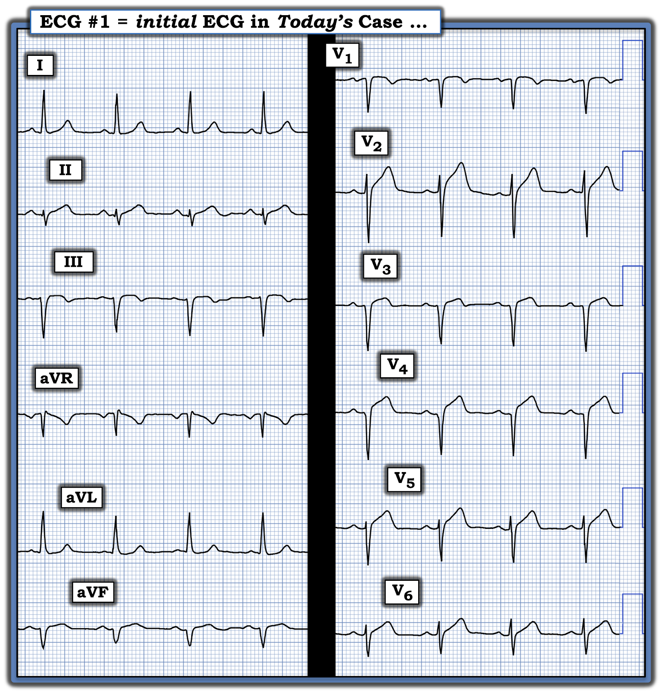
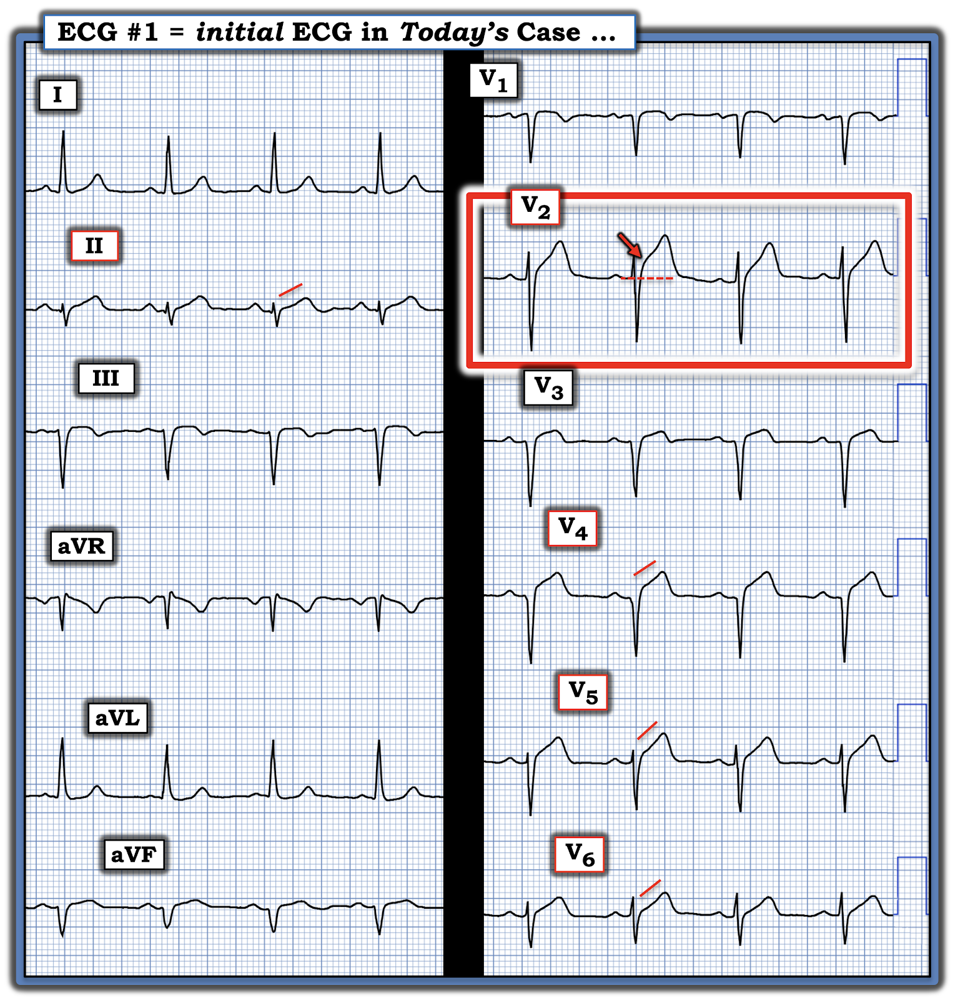
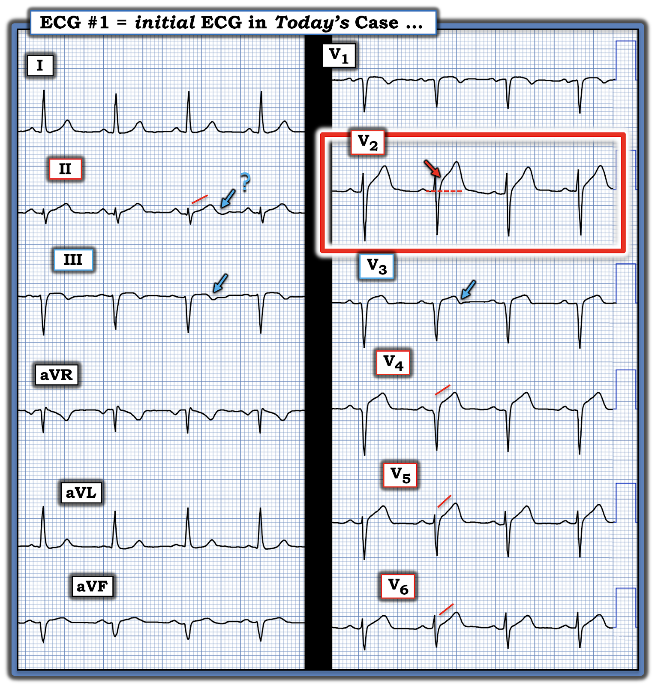
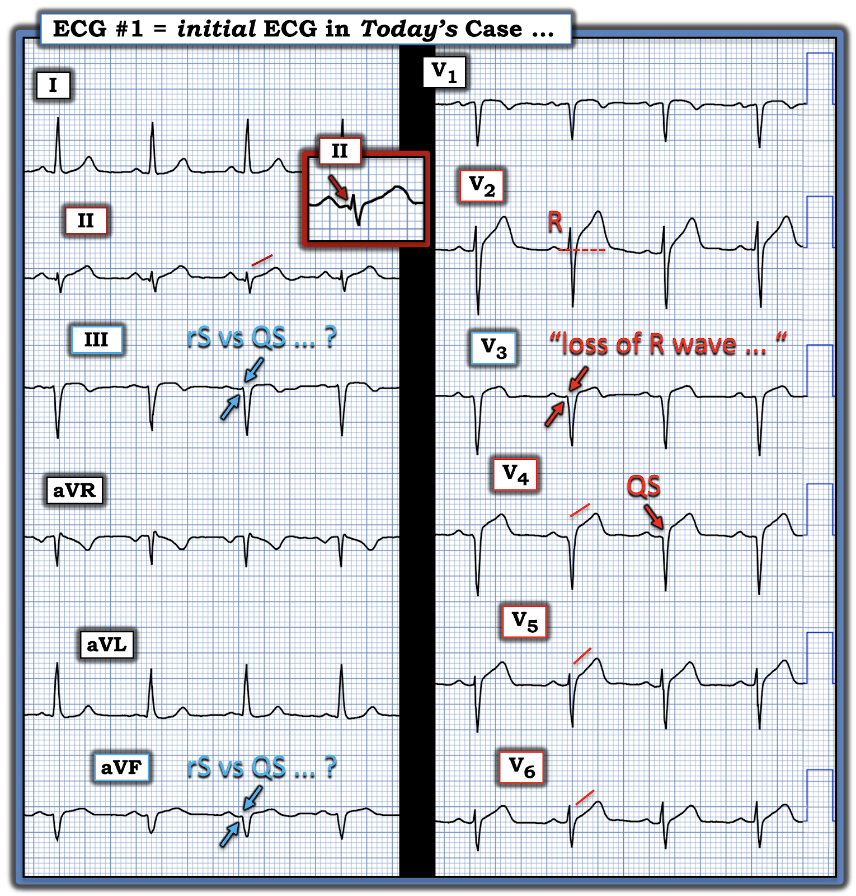

ECG Blog #481 — Mới, cũ — hay ở giữa?
Bạn được xem điện tâm đồ ở Hình-1 — và được biết bản ghi này thu từ một người đàn ông trung niên đến khám vì đau thượng vị và "xỉu" trong 4 ngày trước đó.
- Không có CP (đau ngực — Chest Pain).
- Không có bản ghi cũ — và không có thêm thông tin nào vào thời điểm bạn được xem bản ghi này.
CÂU HỎI:
- Bạn diễn giải như thế nào về điện tâm đồ ở Hình-1?
- — Có nên kích hoạt phòng thông tim (cath lab) không?


SUY NGHĨ CỦA TÔI về CA BỆNH hôm nay:
Có rất nhiều dấu hiệu điện tâm đồ trên bản ghi ở Hình-1. Vì vậy, tôi muốn dành ~30 giây đầu tiên khi đánh giá điện tâm đồ #1 cho các thông số cơ bản: Tần số & Nhịp, Các khoảng, Trục và Lớn các buồng tim — trước khi tập trung vào các thay đổi cấp (Xem ECG Blog #205 để ôn lại Cách tiếp cận hệ thống của tôi).
- Xin nhấn mạnh: Điều khiến ca hôm nay đặc biệt khó — là việc không có CP và thời gian kéo dài 4 ngày.
- Nhịp ở điện tâm đồ #1 là nhịp xoang, tần số 80-85 lần/phút.
- Tất cả các khoảng (PR, QRS, QTc) đều bình thường.
- Trục mặt phẳng trán lệch trái rõ rệt — phù hợp với LAHB (blốc phân nhánh trái trước — Left Anterior HemiBlock) vì QRS chủ yếu âm ở cả ba chuyển đạo dưới.
- Không có lớn buồng tim.
Và bây giờ — tìm các thay đổi cấp (tôi sẽ đánh giá tất cả các chuyển đạo về sóng Q, tăng tiến sóng R — và thay đổi ST-T).
=============================
Điều gì đập vào "mắt" tôi ...
- "Mắt" tôi lập tức bị hút vào chuyển đạo V2 (trong hình chữ nhật ĐỎ ở Hình-2). Mức điểm J chênh lên của ST, và đặc biệt là kích thước và "thể tích" của sóng ST-T ở chuyển đạo này rõ ràng không tương xứng với sóng S có biên độ khiêm tốn ở chuyển đạo này.
- LƯU Ý #1: Có một số khác biệt về hình dạng sóng ST-T giữa 4 nhát mà chúng ta thấy ở chuyển đạo V2. Phức bộ thứ 2 ở chuyển đạo này (nơi tôi đã thêm mũi tên ĐỎ, làm nổi bật mức điểm J chênh lên của ST) — biểu hiện hình dạng đoạn ST đáng lo ngại nhất. Điều này đặt ra câu hỏi: nhát nào trong 4 nhát ở V2 phản ánh chính xác nhất hình dạng sóng ST-T thực sự ở chuyển đạo này?
- Điểm MẤU CHỐT: Cách tôi biết ngay rằng mối lo ngại của mình về sóng ST-T ở chuyển đạo V2 là có thật — là nhờ đoạn ST thẳng đuỗn rõ ràng mà chúng ta thấy ở các chuyển đạo V4,V5,V6 (các đường ĐỎ ở những chuyển đạo này). Đây đều là sóng T tối cấp.
- Cũng có ST chênh lên ở 3 chuyển đạo ngực bên này, điều không nên có (đặc biệt ở chuyển đạo V4).
- Đoạn ST thẳng đuỗn bất thường tương tự cũng thấy ở chuyển đạo II.
- LƯU Ý #2: Đến đây, dù không có CP — tôi biết đã có nhồi máu vào một thời điểm nào đó, có lẽ bắt đầu ~4 ngày trước khi các triệu chứng của bệnh nhân khởi phát. Nhưng còn nhiều điều hơn nữa đang diễn ra trên điện tâm đồ này (Xem bên dưới ở Hình-3).


=============================
Sóng T tái tưới máu?
Ở Hình-3 — tôi đã thêm các mũi tên XANH để làm nổi bật sóng T đảo ngược kín đáo-nhưng-có-thật ở chuyển đạo V3 và chuyển đạo III (và có lẽ cả ở chuyển đạo II ).
- Tôi thấy chuyển đạo V3 đặc biệt thú vị, vì nó nằm giữa các chuyển đạo ngực có những dấu hiệu ST-T nổi bật hơn nhiều (tức là sóng ST-T tối cấp ở chuyển đạo V2 — và ở các chuyển đạo V4,V5,V6). Sóng T đảo ngược phần cuối mà mũi tên XANH làm nổi bật ở chuyển đạo V3 (cũng như kết quả thông tim bên dưới) này — giải thích lý do.


=============================
Tổng hợp lại tất cả:
Ở Hình-4, tôi làm nổi bật một loạt dấu hiệu quan trọng khác tiếp theo đã đập vào "mắt" tôi.
- Đã có nhồi máu thành dưới vào một thời điểm nào đó. Dù khó xác định chúng ta đang thấy sóng QS hay một sóng r khởi đầu rất nhỏ ở chuyển đạo III và aVF — rõ ràng có vẻ có một sóng q nhỏ khởi đầu ở chuyển đạo II (Xem ô phóng to chuyển đạo này ở Hình-4).
- ĐIỂM THEN CHỐT (PEARL) #1: Đôi khi khó phân biệt LAHB với nhồi máu cơ tim thành dưới — cũng như với khả năng có cả LAHB và nhồi máu thành dưới. Sóng "giả Q" mà chúng ta thấy ở ô phóng to chuyển đạo II này — cho thấy có nhiều hơn một LAHB đơn thuần (vì bản thân LAHB không tạo ra sóng Q ở thành dưới).
- Khó xác định tuổi của nhồi máu cơ tim thành dưới ở Hình-3 — vì có sóng T tối cấp ở chuyển đạo II — có thể có sóng T tái tưới máu ở chuyển đạo II và III (sóng T đảo ngược phần cuối kín đáo) — nhưng không có nhiều hơn mức ST chênh lên tối thiểu (nhiều nhất) ở chuyển đạo III và aVF.
Sóng Q và tăng tiến sóng R ở các chuyển đạo ngực:
Về các chuyển đạo ngực — Chúng ta biết đã có nhồi máu thành trước vào một thời điểm nào đó vì:
- Giả sử không đặt sai vị trí điện cực — đã có “mất sóng R” từ chuyển đạo V2 sang V3 (Có thể có hoặc không có một sóng r khởi đầu rất nhỏ ở chuyển đạo V3).
- Có phức bộ QS rõ ràng ở chuyển đạo V4.
- ĐIỂM THEN CHỐT (PEARL) #2: Khó “định tuổi” nhồi máu thành trước này. Có lẽ quá trình cấp bắt đầu ~4 ngày trước (tức là vào lúc bệnh nhân bắt đầu đau thượng vị và bắt đầu có những cơn ngất?). Có lẽ nhồi máu thành dưới và/hoặc thành trước là cũ — với một biến cố mới chồng lên?
- Dù có thể bệnh nhân này có phình thất trái do nhồi máu trước đó — các sóng ST-T trông như tối cấp rõ ràng gợi ý rằng còn có điều gì đó hơn thế đang diễn ra.
- LƯU Ý: Tìm được một điện tâm đồ cũ của bệnh nhân này có thể giúp làm sáng tỏ điều gì là "mới" so với "cũ" so với "mới chồng lên cũ".
- ĐIỀU CỐT LÕI: Với bệnh sử của bệnh nhân này và các dấu hiệu điện tâm đồ nêu trên — thông tim kịp thời là có chỉ định để làm rõ giải phẫu (vì có thể cần tái tưới máu bằng PCI).


=============================
Diễn tiến của CA hôm nay:
- Troponin tăng đáng kể.
- Thông tim cho thấy tắc hoàn toàn cả LAD lẫn động mạch LCx (điều này có lẽ giải thích hình dạng sóng ST-T tương đối khiêm tốn ở chuyển đạo chuyển tiếp V3 — vốn nằm giữa các thay đổi ST-T rõ rệt hơn ở các chuyển đạo lân cận V2 và V4,5,6). Đã tiến hành PCI.
==================================
Lời cảm ơn: Xin cảm ơn Tayfun Anil Demir (ở Antalya, Thổ Nhĩ Kỳ) đã chia sẻ ca bệnh và bản ghi này.
==================================
==================================
PHẦN BỔ SUNG (5/10/2025):
- Để có Thêm Tài liệu — về đọc điện tâm đồ trong các OMI (không thỏa tiêu chuẩn STEMI tính theo milimét).

- Trong "My ECG Podcasts" — Hãy xem ECG Podcast #2 (ECG Errors that Lead to Missing Acute Coronary Occlusion — Những lỗi đọc điện tâm đồ dẫn đến bỏ sót tắc động mạch vành cấp).
- Trong 'My ECG Videos" — Hãy xem gần đầu trang đó các VIDEO từ các buổi MedAll ECG Talks của tôi, ôn lại chẩn đoán nhồi máu cơ tim cấp trên điện tâm đồ — và cách nhận ra OMI cấp khi không thỏa tiêu chuẩn STEMI (được ôn lại trong ECG Blog #406 — Blog #407 — Blog #408).
- Xin LƯU Ý — Với mỗi video trong 6 video MedAll ở đầu trang My ECG Videos, NẾU bạn bấm vào "More" trong phần mô tả, bạn sẽ thấy một Mục lục có liên kết cho phép nhảy tới phần bàn về từng điểm cụ thể (ví dụ, ở phút 5:29 trong video dài 22 phút của Blog #406 — bạn có thể nhảy tới "You CAN recognize OMI without STEMI findings!" (Bạn CÓ THỂ nhận ra OMI mà không có dấu hiệu STEMI!) ).
T.B. (P.S.): Một ca bệnh đáng suy ngẫm, gợi nhiều trăn trở do bác sĩ tim mạch Dr. Willy Frick bàn luận — kèm Bình luận của tác giả do tôi viết ở cuối trang (trong bài ngày 17 tháng 3 năm 2025) — Hãy xem ca này.
- Như Dr. Frick và tôi nhấn mạnh — không chỉ "mô hình STEMI" hiện nay đã lỗi thời — mà trong những ca như ca chúng tôi mô tả, vì các nhân viên y tế chờ cho đến khi tiêu chuẩn STEMI cuối cùng được thỏa — thông tim và PCI đã bị trì hoãn hơn 1 ngày.
- NHƯNG — vì phòng thông tim được kích hoạt trong vòng 1 giờ sau một điện tâm đồ cuối cùng đã thỏa tiêu chuẩn STEMI — ca này sẽ được ghi vào các sổ đăng ký nghiên cứu là "rất thành công với việc kích hoạt nhanh phòng thông tim trong vòng 1 giờ sau khi nhận diện "STEMI". Cách diễn giải sai lầm các sự kiện này hoàn toàn phớt lờ thực tế lâm sàng là bệnh nhân này đã mất đi một cách không cần thiết một lượng cơ tim đáng kể, vì điện tâm đồ ban đầu (ghi >24 giờ trước đó) rõ ràng đã chẩn đoán STEMI(-)/OMI(+) nhưng không được xử trí vì các nhân viên y tế "mắc kẹt" với phác đồ STEMI.
- Hậu quả đáng tiếc là tạo ra y văn "ủng hộ" sai lầm, gợi ý tính giá trị của một mô hình đã lỗi thời và không còn chính xác.
- Thực tế lâm sàng: Nhiều trường hợp tắc động mạch vành cấp không bao giờ xuất hiện ST chênh lên (hoặc chỉ xuất hiện ST chênh lên muộn trong diễn tiến) — trong khi chú ý tới các tiêu chuẩn điện tâm đồ bổ sung trong các tài liệu tham khảo nêu trên có thể giúp chúng ta nhận diện OMI cấp ở nhiều ca STEMI(-) như vậy.
==========================